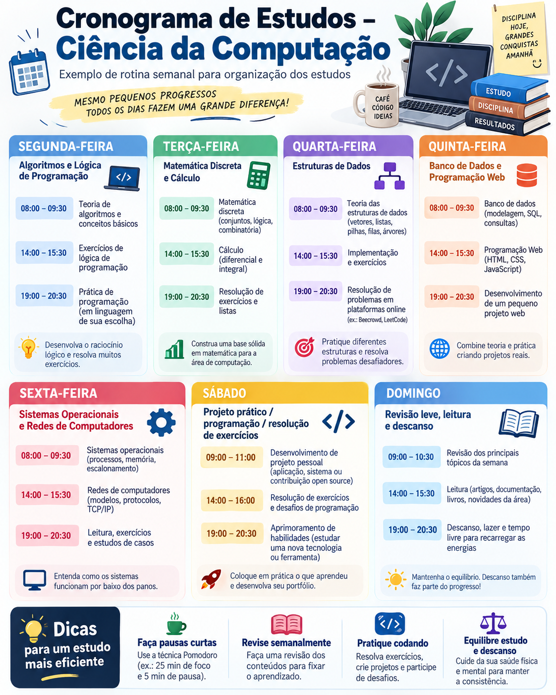

Este cronograma apresenta uma sugestão de organização para estudantes de Ciência da Computação.
A ideia é dividir o tempo entre teoria, exercícios, programação e revisão.

Organize sua semana de estudos no curso de Ciência da Computação.
Este cronograma apresenta uma sugestão de organização para estudantes de Ciência da Computação.
A ideia é dividir o tempo entre teoria, exercícios, programação e revisão.

| Dia | Matéria | Horário |
|---|---|---|
| Segunda-feira | Algoritmos e Lógica de Programação | 19:00 - 20:30 |
| Terça-feira | Matemática Discreta | 19:00 - 20:30 |
| Quarta-feira | Estruturas de Dados | 19:00 - 20:30 |
| Quinta-feira | Banco de Dados | 19:00 - 20:30 |
| Sexta-feira | Programação Web | 19:00 - 20:30 |
| Sábado | Projeto prático e revisão | |
| Domingo: revisão leve, leitura e descanso. | ||
Exemplo de progresso dos estudos:
Nível de preparação:
Tente estudar um pouco todos os dias e evite deixar todas as matérias para o fim da semana.
Reorganize o cronograma e distribua o conteúdo perdido entre os próximos dias.